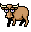

A faithful recreation of the classic Final Cut Pro mascot/easter egg, Bruce the Wonder Yak.
The opposite of "weird" is "boring." — Bruce the Wonder Yak
Don't know who Bruce is? Learn his history here
Download for Macv1.0.2 · macOS 14 Sonoma or later · All releases